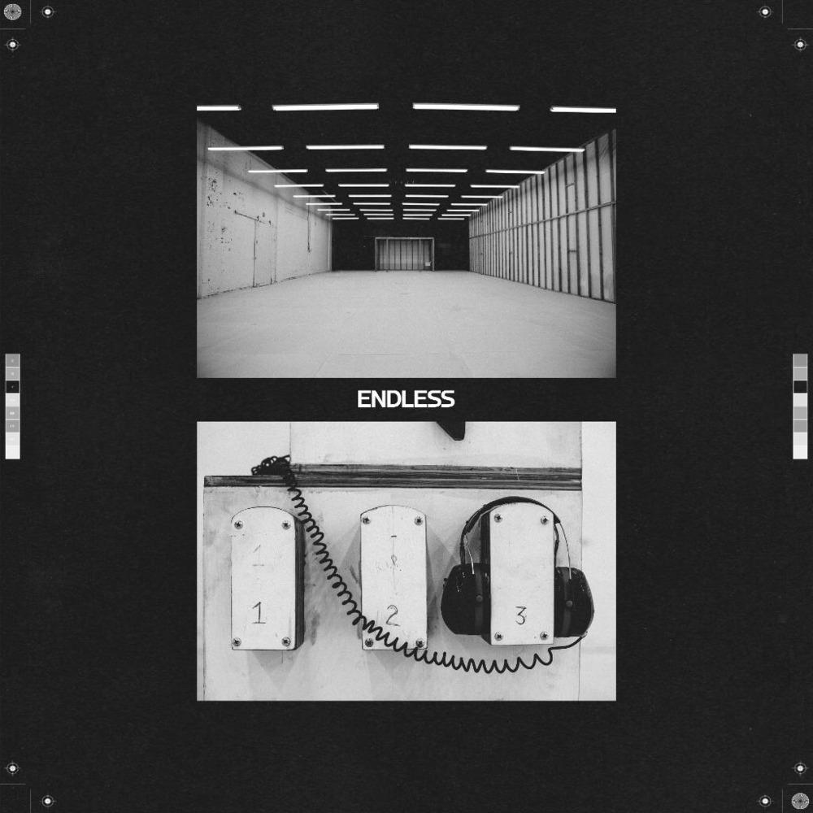
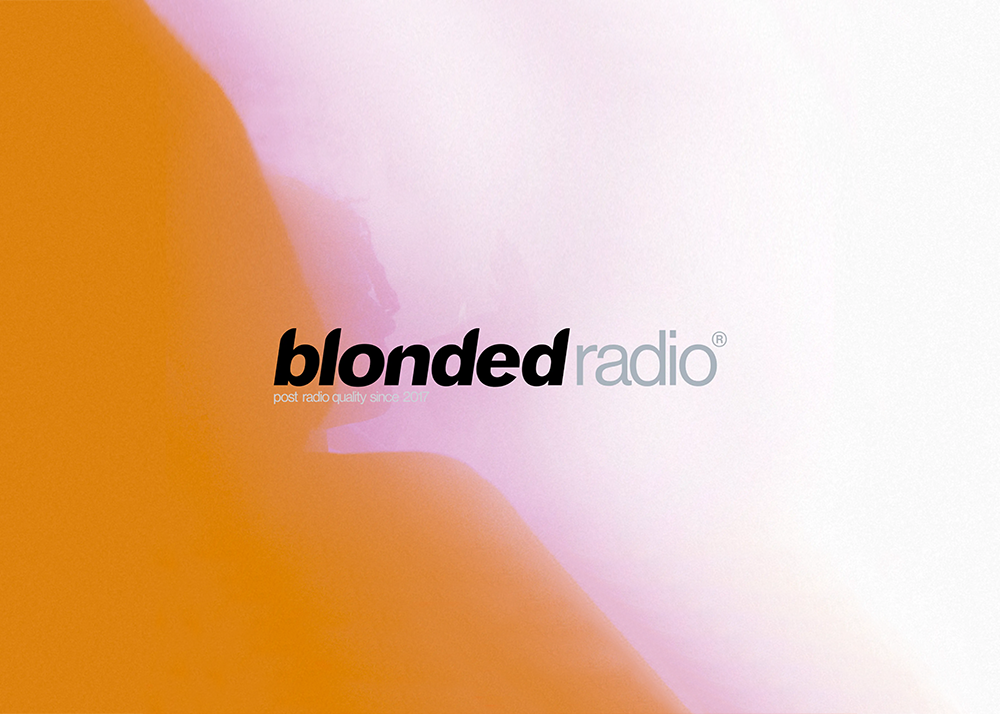
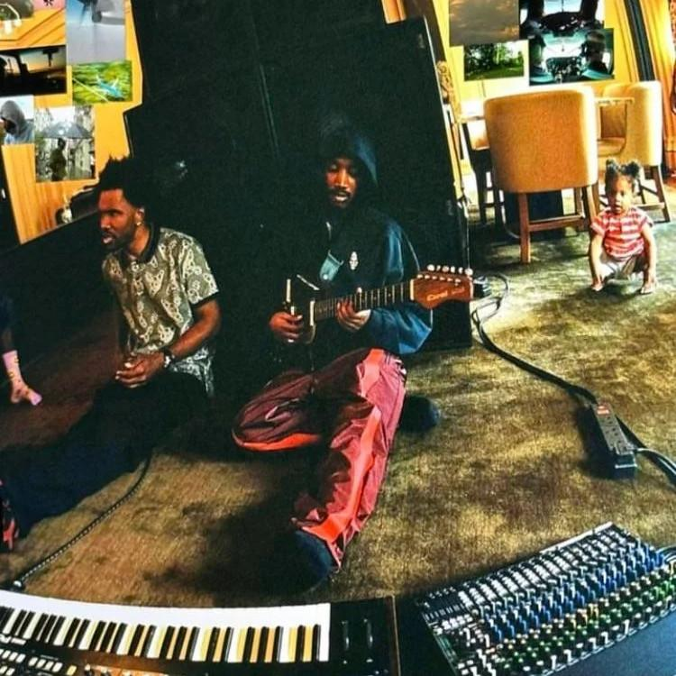

| A | B | C | D | E | F | G | H | I | |
|---|---|---|---|---|---|---|---|---|---|
1 | Era | Name | Notes | Track Length | Leak Date | Type | Available Length | Quality | Link(s) |
2 | 0 Full 0 Tagged 0 Partial 3 Snippet 2 Unavailable | Broken Glass | (08/23/2005) Lonny moves to Los Angeles (??/??/2007) Lonny scraps Broken Glass | In 2005, Hurricane Katrina hit Ocean's hometown of New Orleans and his recording facility was destroyed by floodwater and looting. To continue recording music, he moved to Los Angeles and intended to stay for just six weeks but decided to stay longer and develop his music career. He worked on multiple solo songs under the name "Lonny Breaux" intended for a 5 track project called "Broken Glass." The project was later scrapped sometime between 2007 and 2008. | |||||
3 | Broken Glass | Screensaver | A track from the unreleased EP "Broken Glass". | Jan 9, 2024 | Throwaway | Snippet | High Quality | ||
4 | Broken Glass | Shot | A track from the unreleased EP "Broken Glass". | Feb 10, 2024 | Throwaway | Snippet | High Quality | ||
5 | Broken Glass | Why You Love Me | A track from the unreleased EP "Broken Glass". | Jan 9, 2024 | Throwaway | Snippet | High Quality | ||
6 | Broken Glass | ??? | It was said that Frank's first studio session was booked when he was 12 or 13. It is unknown what came out of this if anything. | Unknown | Confirmed | Not Available | |||
7 | Broken Glass | Unknown [Hit-Boy Collaborations] (prod. Hit-Boy) | Theres said to be many more Hit-Boy collaborations dating back to 2006 as Hit-Boy said in his interview with HipHopDX. | Unknown | Confirmed | Not Available | |||
8 | 64 Full 1 Tagged 4 Partial 6 Snippet 0 Unavailable | Lonny Breaux | (??/??/2007) Lonny scraps Broken Glass (??/??/2009) Lonny signs to Def Jam |  | Lonny scraps Broken Glass sometime between 2007 and 2008. After establishing contact with people in the music industry. He recorded some demos at a friend's studio and shopped them around Los Angeles. After getting a songwriting deal, he started working with other record producers and wrote songs for many large artists. | ||||
9 | Lonny Breaux | Back (To You) (prod. Dapo Torimiro) | A throwaway from the 'Lonny Breaux' sessions. A popular edit of this song features Nikki Flores on duet. | Aug 3, 2011 | Throwaway | Full | High Quality | ||
10 | Lonny Breaux | ⭐ Bedtime Story | A throwaway from the 'Lonny Breaux' sessions. Evidence suggests that it had been floating around on the internet for longer. | Jan 1, 2011 | Throwaway | Full | High Quality | ||
11 | Lonny Breaux | Big Enough (prod. Midi Mafia) | A throwaway from the 'Lonny Breaux' sessions. Recorded in 2009 as a reference track for Justin Bieber. | Apr 7, 2020 | Throwaway | Full | High Quality | ||
12 | Lonny Breaux | Blasted (prod. Midi Mafia) | A throwaway from the 'Lonny Breaux' sessions. | Jan 1, 2011 | Throwaway | Full | High Quality | ||
13 | Lonny Breaux | Bricks And Steel (prod. The Underdogs) | A throwaway from the 'Lonny Breaux' sessions. | Jan 1, 2011 | Throwaway | Full | High Quality | ||
14 | Lonny Breaux | Broken Pieces (prod. Clyde & Harry) | Snippet of an unused reference track that was leaked and tagged. | Jan 1, 2011 | Throwaway | Partial | High Quality | ||
15 | Lonny Breaux | Cameras | Snippet of an unused reference track that originally leaked sometime in 2012. | Jan 1, 2011 | Throwaway | Partial | High Quality | ||
16 | Lonny Breaux | Can't Be The Last Time [V1] (prod. Gil & Vince) | A throwaway from the 'Lonny Breaux' sessions. | Jan 1, 2011 | Demo | Full | High Quality | ||
17 | Lonny Breaux | Can't Be The Last Time [V2] (prod. Gil & Vince) | Has slightly different drums and mix than the other leak. | May 31, 2021 | Throwaway | Full | High Quality | ||
18 | Lonny Breaux | Day Away (prod. Brian Kennedy) | A throwaway from the 'Lonny Breaux' sessions. Seems like a reference track for a female singer. | Jan 1, 2011 | Throwaway | Full | High Quality | ||
19 | Lonny Breaux | Denim (prod. Brian Kennedy) | A throwaway from the 'Lonny Breaux' sessions. | Jan 1, 2011 | Throwaway | Full | High Quality | ||
20 | Lonny Breaux | Done (prod. Midi Mafia) (When I'm Done) | A throwaway from the 'Lonny Breaux' sessions. Appears twice on the Lonny Breaux Collection, once under the name "Done" and under the name "When I'm Done". | Jan 1, 2011 | Throwaway | Full | High Quality | ||
21 | Lonny Breaux | Dream Killa (prod. Midi Mafia) | A throwaway from the 'Lonny Breaux' sessions. | Jul 6, 2011 | Throwaway | Full | High Quality | ||
22 | Lonny Breaux | Dying For Your Love (feat. James Fauntleroy) (prod. The Cartel) | A throwaway from the 'Lonny Breaux' sessions. | Jan 1, 2011 | Throwaway | Full | High Quality | ||
23 | Lonny Breaux | Flight (prod. J.R. Hutson) | A throwaway from the 'Lonny Breaux' sessions. | Jan 1, 2011 | Throwaway | Full | High Quality | ||
24 | Lonny Breaux | Focus (prod. Soundz) | Not sure if it's actually Frank Ocean on the song or not, but listed as it's been part of The Lonny Breaux Collection for years. | Jan 1, 2011 | Throwaway | Full | High Quality | ||
25 | Lonny Breaux | Follow (prod. The Underdogs) | A throwaway from the 'Lonny Breaux' sessions. | Jan 1, 2011 | Throwaway | Full | High Quality | ||
26 | Lonny Breaux | Go Up (prod. J.R. Hutson) | A throwaway from the 'Lonny Breaux' sessions. | Jan 1, 2011 | Throwaway | Full | High Quality | ||
27 | Lonny Breaux | Good Decoration (prod. Midi Mafia) | A throwaway from the 'Lonny Breaux' sessions. | Jan 1, 2011 | Throwaway | Full | High Quality | ||
28 | Lonny Breaux | Got The Keys (prod. Midi Mafia) | A throwaway from the 'Lonny Breaux' sessions. | Jan 1, 2011 | Throwaway | Full | High Quality | ||
29 | Lonny Breaux | Hardest Thing (prod. Midi Mafia) | A throwaway from the 'Lonny Breaux' sessions. | Jan 1, 2011 | Throwaway | Full | High Quality | ||
30 | Lonny Breaux | Heart | Snippet of a reference track likely recorded in 2010 posted by Alek on leakth.is | Feb 18, 2020 | Throwaway | Snippet | High Quality | ||
31 | Lonny Breaux | Holly Baby | A throwaway from the 'Lonny Breaux' sessions. | Jan 1, 2011 | Throwaway | Full | High Quality | ||
32 | Lonny Breaux | I Need It | A throwaway from the 'Lonny Breaux' sessions. | Jan 1, 2011 | Throwaway | Full | High Quality | ||
33 | Lonny Breaux | I Need Love (prod. The Cartel) | A throwaway from the 'Lonny Breaux' sessions. | Jan 1, 2011 | Throwaway | Full | High Quality | ||
34 | Lonny Breaux | If I'm In Love (prod. Midi Mafia) | A throwaway from the 'Lonny Breaux' sessions. | Jan 1, 2011 | Throwaway | Full | High Quality | ||
35 | Lonny Breaux | ⭐ J.O.B. (prod. Syience) | A throwaway from the 'Lonny Breaux' sessions. One of the standout Lonny Breaux tracks. | Jan 1, 2011 | Throwaway | Full | High Quality | ||
36 | Lonny Breaux | Kamikaze (prod. The Underdogs) | A throwaway from the 'Lonny Breaux' sessions. | Jan 1, 2011 | Throwaway | Full | High Quality | ||
37 | Lonny Breaux | Know Better (prod. Brian Kennedy) | Another one of those tracks that is unclear if it's Frank Ocean singing or not, but it's been part of The Lonny Breaux Collection for years so once again listed for posterity. | Jan 1, 2011 | Throwaway | Full | High Quality | ||
38 | Lonny Breaux | Let Me (feat. Kyle Christopher) | Leaked by Kyle Christopher. Frank Ocean's manager said the song wasn't real, but there is a photo of the Christopher and Ocean hanging out together so it's likely that it is real. | Jul 31, 2011 | Throwaway | Full | High Quality | ||
39 | Lonny Breaux | Lights (prod. Midi Mafia) | A throwaway from the 'Lonny Breaux' sessions. | Jan 1, 2011 | Throwaway | Full | High Quality | ||
40 | Lonny Breaux | Lost Angel (prod. Brian Kennedy) | Produced by Brian Kennedy. This track is also listed twice on the mixtape for whatever reason, the second one being "Lost Angel (No 2nd Verse)", even though that version is the exact same as the other one. | Jan 1, 2011 | Throwaway | Full | High Quality | ||
41 | Lonny Breaux | Math | A throwaway from the 'Lonny Breaux' sessions. | Apr 10, 2012 | Throwaway | Full | High Quality | ||
42 | Lonny Breaux | ⭐ Miss You So (prod. Midi Mafia) (Pictures) | A reference track that was given to Conor Manyard who released it under the title "Pictures". | Jan 1, 2011 | Ref Track | Full | High Quality | ||
43 | Lonny Breaux | No Bonnie (prod. Midi Mafia) | A throwaway from the 'Lonny Breaux' sessions. | Jan 1, 2011 | Throwaway | Full | High Quality | ||
44 | Lonny Breaux | No Love | A throwaway from the 'Lonny Breaux' sessions. | Jan 1, 2011 | Throwaway | Full | High Quality | ||
45 | Lonny Breaux | No One Ever Could | Snippet posted by R039 to leakth.is claiming it as "Pre-Blond era". Very likely to be a Lonny Breaux ref track | Nov 27, 2020 | Throwaway | Snippet | High Quality | ||
46 | Lonny Breaux | Non-Stop (prod. J.R. Rotem) | A throwaway from the 'Lonny Breaux' sessions. | Jan 1, 2011 | Throwaway | Full | High Quality | ||
47 | Lonny Breaux | Old Terror (prod. Midi Mafia) | A throwaway from the 'Lonny Breaux' sessions. | Jan 1, 2011 | Throwaway | Full | High Quality | ||
48 | Lonny Breaux | One Look (prod. Midi Mafia) | A throwaway from the 'Lonny Breaux' sessions. | Jan 1, 2011 | Throwaway | Full | High Quality | ||
49 | Lonny Breaux | Open Air | A throwaway from the 'Lonny Breaux' sessions. | Jan 1, 2011 | Throwaway | Full | High Quality | ||
50 | Lonny Breaux | Orion | A throwaway from the 'Lonny Breaux' sessions about his brother Ryan. | Apr 11, 2011 | Throwaway | Full | High Quality | ||
51 | Lonny Breaux | PDA | Reference track for Backstreet Boys recorded and released in 2009. | Apr 7, 2012 | Ref Track | Full | High Quality | ||
52 | Lonny Breaux | Private Show (prod. J.R. Rotem) | A throwaway from the 'Lonny Breaux' sessions. | Jan 1, 2011 | Throwaway | Tagged | High Quality | ||
53 | Lonny Breaux | Quickly (prod. Midi Mafia) | Reference track for John Legend and Brandy's song of the same name which was released in 2008. | Jan 1, 2011 | Ref Track | Full | High Quality | ||
54 | Lonny Breaux | Read The Stars (prod. Midi Mafia) | A throwaway from the 'Lonny Breaux' sessions. | Jan 1, 2011 | Throwaway | Full | High Quality | ||
55 | Lonny Breaux | Ready | A throwaway from the 'Lonny Breaux' sessions. This track appears twice on The Lonny Breaux collection, once under the name "Lonny (New Mix), then later as "Ready" for whatever reason. | Jan 1, 2011 | Throwaway | Full | High Quality | ||
56 | Lonny Breaux | Real (prod. The Underdogs) | A throwaway from the 'Lonny Breaux' sessions. | Jan 1, 2011 | Throwaway | Full | High Quality | ||
57 | Lonny Breaux | Richest Man In The Room (prod. Midi Mafia) | A throwaway from the 'Lonny Breaux' sessions. | Jan 1, 2011 | Throwaway | Full | High Quality | ||
58 | Lonny Breaux | Rocket Love (prod. Midi Mafia) | A throwaway from the 'Lonny Breaux' sessions. The song was later given to Angel in 2013 who released it on his 'About Time' album. | Jan 1, 2011 | Ref Track | Full | High Quality | ||
59 | Lonny Breaux | Scared of Beautiful | Reference track for Brandy Norwood. Leaked in March 2011. The song was later used by Brandy for her album "Two Eleven". | Mar 1, 2011 | Ref Track | Full | High Quality | ||
60 | Lonny Breaux | She Won't Say Hello (prod. The Underdogs) | A throwaway from the 'Lonny Breaux' sessions. | Jan 1, 2011 | Throwaway | Full | High Quality | ||
61 | Lonny Breaux | Simply (prod. Midi Mafia) | A throwaway from the 'Lonny Breaux' sessions. | Jan 1, 2011 | Throwaway | Full | High Quality | ||
62 | Lonny Breaux | So Fresh | A throwaway from the 'Lonny Breaux' sessions, an unused reference. | Jan 1, 2011 | Throwaway | Partial | High Quality | ||
63 | Lonny Breaux | Standing Free (prod. Carvin & Ivan) | A throwaway from the 'Lonny Breaux' sessions. | Jan 3, 2024 | Throwaway | Snippet | High Quality | ||
64 | Lonny Breaux | Standing Still (prod. Midi Mafia) | A throwaway from the 'Lonny Breaux' sessions. | Jan 1, 2011 | Throwaway | Full | High Quality | ||
65 | Lonny Breaux | Static (prod. DJ Genius) | A throwaway from the 'Lonny Breaux' sessions. | Apr 11, 2011 | Throwaway | Full | High Quality | ||
66 | Lonny Breaux | Sucka For Love [V1] (prod. Hitboy) | Original version of "Sucka For Love" without additional production. | Jan 1, 2011 | Demo | Full | High Quality | ||
67 | Lonny Breaux | Sucka For Love [V2] (prod. Hitboy & Mansur) | A throwaway from the 'Lonny Breaux' sessions. Later version with additional production from Mansur. | Jan 1, 2011 | Throwaway | Full | High Quality | ||
68 | Lonny Breaux | Taste (prod. Midi Mafia) | A throwaway from the 'Lonny Breaux' sessions. | Jan 1, 2011 | Throwaway | Full | High Quality | ||
69 | Lonny Breaux | The City (prod. Tim & Bob) | A throwaway from the 'Lonny Breaux' sessions. | Jan 1, 2011 | Throwaway | Full | High Quality | ||
70 | Lonny Breaux | Time Machine (prod. Midi Mafia) | A throwaway from the 'Lonny Breaux' sessions. | Jan 1, 2011 | Throwaway | Full | High Quality | ||
71 | Lonny Breaux | Together (prod. Brian Kennedy) | A throwaway from the 'Lonny Breaux' sessions. | Jan 1, 2011 | Throwaway | Full | High Quality | ||
72 | Lonny Breaux | Tonight | A throwaway from the 'Lonny Breaux' sessions. | Jan 1, 2011 | Throwaway | Full | High Quality | ||
73 | Lonny Breaux | Trouble | Another snippet of an unused reference track that has been tagged and leaked sometime in 2012. | Jan 1, 2011 | Throwaway | Partial | High Quality | ||
74 | Lonny Breaux | Truce (prod. The Runners) | A throwaway from the 'Lonny Breaux' sessions. | Jan 1, 2011 | Throwaway | Full | High Quality | ||
75 | Lonny Breaux | Try (prod. Midi Mafia) | A throwaway from the 'Lonny Breaux' sessions. | Aug 26, 2011 | Throwaway | Full | High Quality | ||
76 | Lonny Breaux | U Got It | A throwaway from the 'Lonny Breaux' sessions. Frank Ocean apparently revealed on Twitter that it was recorded in 2008. | May 8, 2011 | Throwaway | Full | High Quality | ||
77 | Lonny Breaux | Wake Up (prod. The Underdogs) | A throwaway from the 'Lonny Breaux' sessions. | Jan 1, 2011 | Throwaway | Full | High Quality | ||
78 | Lonny Breaux | Wayfarers (Light Show) | A throwaway from the 'Lonny Breaux' sessions. Written by Midi Mafia, possibly sometime in 2010 in the same session as "Scared of Beautiful". | Jan 1, 2011 | Throwaway | Full | High Quality | ||
79 | Lonny Breaux | ??? | A throwaway from the 'Lonny Breaux' sessions. Either named "Definitely Overreacting, Be A Daddy or Put Me On." Likely produced by Midi Mafia. | Apr 1, 2023 | Unknown | Snippet | CD Quality | ||
80 | Lonny Breaux | ??? | A throwaway from the 'Lonny Breaux' sessions. Either named "Definitely Overreacting, Be A Daddy or Put Me On." Likely produced by Midi Mafia. | Apr 1, 2023 | Unknown | Snippet | CD Quality | ||
81 | Lonny Breaux | ??? | A throwaway from the 'Lonny Breaux' sessions. Either named "Definitely Overreacting, Be A Daddy or Put Me On." Likely produced by Midi Mafia. | Apr 1, 2023 | Unknown | Snippet | CD Quality | ||
82 | Lonny Breaux | Brandy - Surprise Ending (ref. Lonny Breaux) | Unreleased song from Brandy's Human sessions with what seems to be Frank being used as reference vox for the hook. | Jan 1, 2011 | Ref Track | Full | High Quality | ||
83 | Lonny Breaux | James Fauntleroy - So Comfortable (feat. Lonny Breaux) (prod. The Underdogs) | A throwaway from the 'Lonny Breaux' sessions. | Jan 1, 2011 | Feature | Full | High Quality | ||
84 | 7 Full 1 Tagged 1 Partial 2 Snippet 1 Unavailable | nostalgia, ULTRA. (Triptape) | (??/??/2009) Frank joins Odd Future. (02/16/2011) Nostalgia, ULTRA. officially releases. | In late 2009, Breaux had signed a contract with Def Jam Records as a solo artist. He was initially unable to build a relationship with the company. As a result, Breaux decided to join rap collective Odd Future. Breaux had silently started work on an album under Def Jam's nose. Originally slated for a July 4th, 2010 release under the name "Triptape," it was delayed for an unknown reason. While working on the album, Breaux had decided to adopt a new stage name, "Frank Ocean." After seemingly no promotion, "Nostalgia ULTRA." was released online for free in February 2011. Plans were made with Def Jam to release the album as "Nostalgia, LITE.", a 7 track version of the album with many songs removed and new songs added in their place. Plans fell through and Frank began work on his next album. | |||||
85 | nostalgia, ULTRA. | Acura Integurl [V1] (prod. Dre Knight) | Posted on his blog in February 2011. In a March 2020 piece by The Face, producer Dre Knight reveals that Frank Ocean considered this version the final one. | Feb 4, 2011 | Demo | Full | High Quality | ||
86 | nostalgia, ULTRA. | Acura Integurl [V2] (prod. Dre Knight) | More developed version, shorter and slightly different than V3. | Apr 24, 2021 | Demo | Full | High Quality | ||
87 | nostalgia, ULTRA. | ⭐ Acura Integurl [V3] (prod. Dre Knight) | Version 2 released by producer Dre Knight in 2012 after Frank announced that nostalgia, lite was cancelled. More fleshed out version with completed instrumental. | Oct 27, 2012 | Throwaway | Full | High Quality | ||
88 | nostalgia, ULTRA. | Best Seller | Leaked in August 2011. | Aug 6, 2011 | Throwaway | Tagged | High Quality | ||
89 | nostalgia, ULTRA. | ⭐ Heartbreak + Jet Lag | Released on his SoundCloud officially in October 2010 under the name Frank Ocean, then later deleted. | Oct 24, 2010 | Throwaway | Full | High Quality | ||
90 | nostalgia, ULTRA. | Love Crimes | Original version with Love Crimes with supposedly different take and production. Snippet put up by waterfalls. | Aug 23, 2022 | OG | Snippet | CD Quality | ||
91 | nostalgia, ULTRA. | Now Or Never | Snippet by songshop.biz. Era is unknown. | Jun 4, 2020 | Throwaway | Snippet | CD Quality | ||
92 | nostalgia, ULTRA. | ⭐ Pyrite (Fool's Gold) | Released on his SoundCloud officially in October 2010 under the name Frank Ocean, then later deleted. | Oct 24, 2010 | Throwaway | Full | High Quality | ||
93 | nostalgia, ULTRA. | Theme Music | Snippet released through his tumblr account, was a throwaway from nostalgia ultra. | Jun 4, 2011 | Throwaway | Partial | High Quality | ||
94 | nostalgia, ULTRA. | Whip Appeal | Released through his blog on March 2012, was intended for the EP version of nostalgia, ultra. | Mar 19, 2012 | Throwaway | Full | High Quality | ||
95 | nostalgia, ULTRA. | Rockie Fresh - Reach For The Stars (feat. Frank Ocean) (prod. Midi Mafia) | Demo with Rockie Fresh, got leaked in 2012. "Official" trapstyle remix got released in later 2014 by Tronixx and Midi Mafia. Frank Ocean only sings the hook. | Aug 28, 2012 | OG | Full | High Quality | ||
96 | nostalgia, ULTRA. | Unknown [Ciara & Tricky Stewart Collaborations] | Frank was in the studio with Ciara and Tricky Stewart on Ciara's livestream in 2010. | Unknown | Rumored | Not Available | https://www.youtube.com/watch?v=KXp66dWXq80 | ||
97 | 14 Full 0 Tagged 0 Partial 1 Snippet 12 Unavailable | channel ORANGE (Nostalgia, LITE.) | (02/16/2011) nostalgia, ULTRA. is released. (07/10/2012) Channel Orange is released. |  | In February 2011, directly after Nostalgia, ULTRA, Ocean began writing new songs with Malay, a producer and songwriter who then assisted him with recording Channel Orange at EastWest Studios in Hollywood. Rather than rely on samples as he had with his mixtape, Ocean wanted to approach sound and song structure differently on the album. Channel Orange is the debut studio album by Ocean. It was released on July 10, 2012, by Def Jam Recordings. The lyrics on the album eventually led to Ocean coming out as gay on his Tumblr page in 2012. | ||||
98 | Channel Orange | 4 Tears | Released on his tumblr blog in December 2011. On the blog post he said "i just listened to this a few times for myself. figured maybe some else needed to hear it." | Dec 26, 2011 | Throwaway | Full | High Quality | https://pillows.su/f/d147d4f5c8c32238778600e2e7209d3e | |
99 | Channel Orange | Blue Whale (prod. Pharrell Williams) | Released through his blog a few months after channel Orange. | Sep 25, 2012 | Throwaway | Full | High Quality | https://pillows.su/f/0b2441c9ee801304b644acbd93c3e1f3 | |
100 | Channel Orange | Crack Rock (feat. Tyler, The Creator) | Mentioned on Tyler's alt Twitter on July 10th, 2012 (same day as Channel Orange's release). Said that he wrote a verse for Crack Rock but it's unknown if it was ever recorded. Lyrics include "Crack rock crack, rock harder than an underated black cop, rocks wetter than an asian sweat shop. Um, your lips are are looking dead" | Sep 24, 2023 | Unknown | Rumored | Not Available | N/A | |
101 | Channel Orange | Disillusioned | Only performed live in November 2011, never saw an official release. | Nov 12, 2011 | Throwaway | Full | Low Quality | https://pillows.su/f/1ad3f2f4225e8a00f4fc502b26813b0e | |
102 | Channel Orange | Eyes Like Sky | A song from the channel Orange sessions that didn't end up making the cut for unknown reasons. | Feb 23, 2013 | Throwaway | Full | High Quality | https://pillows.su/f/db1ceb1a335df70c75d76c4e3185a09b | |
103 | Channel Orange | Journey | Unreleased song, possibly scrapped from Nostalgia, Ultra or channel ORANGE. Performed by Frank in 2011 at House of Balloons in New Orleans. | Nov 5, 2011 | Throwaway | Full | Low Quality | https://pillows.su/f/b86c4c87063b28d99a02adc8dd8ef8ab | |
104 | Channel Orange | Lava [V1] | Song from 2012 with the line "First off, fuck art." Was revisited in 2017 and turned into Lava. First mention of the line was in a 2012 interview with The Guardian. | Dec 22, 2023 | Unknown | Rumored | Not Available | https://www.theguardian.com/music/2012/dec/13/frank-ocean-would-be-best | |
105 | Channel Orange | ⭐ Pink Matter (feat. Andre 3000 & Big Boi) | Original version released in 2013 on Big Boi's SoundCloud account as a remix. Frank wanted both Big Boi and Andre on the track originally, but was cut since Andre 3000 didn't want a OutKast reunion on another artist's album. | Jan 11, 2013 | OG | Full | High Quality | https://pillows.su/f/448c725cedfdbf04c2379802f5454bfd | |
106 | Channel Orange | Super Rich Kids | Solo version of Super Rich Kids with an alternate verse from Frank. | Nov 15, 2011 | OG | Full | Recording | https://youtu.be/Gte65hTlPsQ?si=KkCwht_uKCOmclyO | |
107 | Channel Orange | Summer Remains | A song released two months prior to Channel Orange and was released as a rough recording on his tumblr. | May 21, 2012 | Throwaway | Full | Low Quality | https://pillows.su/f/c2c12307bd414de03393d9cf71b2123d | |
108 | Channel Orange | Sweet Life [V1] | Sweet Life is said to have another version, which is "very different from the final version." | OG | Confirmed | Not Available | https://theneptunes.org/2012/07/frank-ocean-golden-girl-feat-tyler-the-creator-produced-by-pharrell-williams/ | ||
109 | Channel Orange | Thinkin About Forever [V1] (prod. Frank Ocean & Shea Taylor) (Thinkin Bout You) | Original reference track made for Bridget Kelly's "Thinking About Forever" with a much more bare bones instrumental posted on his tumblr blog. Frank Ocean later re-recorded this song for his album Channel Orange. | Jul 28, 2011 | OG | Full | High Quality | https://pillows.su/f/448d9e9ae4e05f48e79b11e29248866d | |
110 | Channel Orange | Thinkin Bout You [V2] (prod. Frank Ocean & Shea Taylor) (Thinkin About Forever) | Music video version with alternate additional vocals. | Nov 8, 2011 | OG | Full | High Quality | https://pillows.su/f/0d53dd189ed3d07fbcab6a80632a1411 | |
111 | Channel Orange | ⭐ Voodoo (prod. Malay & Frank Ocean) | Alternate of "End" off of Channel Orange without people talking over it. Released through his blog in January 2012. | Jan 28, 2012 | OG | Full | High Quality | https://pillows.su/f/df99f76eeecbe966014fa63a869551d8 | |
112 | Channel Orange | ⭐ Wise Man | The song was recorded for the soundtrack to "Django Unchained", but it didn't make the cut. Released through his blog in December 2012 two days before the release of the film. This song would later be used as a sample on "Virginia Beach" by Drake. | Dec 23, 2012 | Throwaway | Full | High Quality | https://pillows.su/f/e28d522b63ed33adb96eed6c25ab791c | |
113 | Channel Orange | Unknown [Alicia Keys Collaborations] | Frank seen in the studio with Keys on a instagram post posted by Keys in October 2012. | Unknown | Rumored | Not Available | https://www.reddit.com/r/FrankOcean/comments/jfo6mo/frank_ocean_and_alicia_keys_in_the_studio_8_years/ | ||
114 | Channel Orange | Unknown [Kanye West Collaborations] | In early January 2012, Frank Ocean was in a Cruel Summer-era session with Pusha T, Marsha Ambrosius, Hit-Boy, and Jay Electronica. All these other artists have been confirmed to have songs with Kanye during this era, so Frank's participation within the session is still currently unknown, but can be assumed to have happened. | Unknown | Rumored | Not Available | |||
115 | Channel Orange | Unknown [Kanye West & Tyler, The Creator Collaborations] | Session that Tyler, The Creator, Frank Ocean, and Kanye West had sometime during the Cruel Summer era. | Unknown | Rumored | Not Available | |||
116 | Channel Orange | Unknown [Pusha T, Marsha Ambrosius, Hit-Boy & Jay Electronica Collaborations] | In early January 2012, Frank Ocean was in a Cruel Summer-era session with Pusha-T, Marsha Ambrosius, Hit-Boy, and Jay Electronica. All these other artists have been confirmed to have songs with Kanye during this era, so Frank's participation within the session is still currently unknown, but can be assumed to have happened. | Unknown | Rumored | Not Available | https://imgur.com/a/x5m4jTl | ||
117 | Channel Orange | Tyler, The Creator - Sprung (feat. Frank Ocean & Kanye West) (Awkward) | Version of "Awkward" with a Kanye feature. Confirmed by Tyler to be on Wolf on Formspring two months before the album dropped, saying that he hopped on the song at the last minute. | OG | Confirmed | Not Available | https://imgur.com/1aKjzMY | ||
118 | Channel Orange | Tyler, The Creator - Green Purse (feat. Frank Ocean) | Title revealed on March 25th, 2011 by Mike G in his top 10 list of his favorite Tyler beats, later mentioned by Tyler on his alt Twitter account on July 21st, 2011 that he wishes Frank would finish the song. No further information is known. | Throwaway | Rumored | Not Available | https://cdn.discordapp.com/attachments/1101207955736633440/1155645094511247460/IMG_0427.png | ||
119 | Channel Orange | Tyler, The Creator - Sweet Thang (feat. Frank Ocean) | Tyler song in a Wolf tracklist. Was apparently made for Justin Bieber but he didnt want it. | Throwaway | Confirmed | Not Available | |||
120 | Channel Orange | Kanye West - Made in America (ref. Frank Ocean) | Bu Thiam said "Made In America" started as an idea that Frank Ocean did in the studio by himself. "[Frank Ocean] was just thinking of different concepts, he was there for like eight hours, then probably like six in the morning he was like 'Sweet baby Jesus.' " | Ref Track | Confirmed | Not Available | |||
121 | Channel Orange | Kanye West & Jay-Z - No Church [V1] (feat. Frank Ocean) (prod. 88-Keys, Kanye West & MIKE DEAN) (No Church In The Wild) | Version with a spoken word intro by Frank Ocean, confirmed by producer 88-Keys. Rumored to be pretty comical, but it didn't make the final cut. | OG | Confirmed | Not Available | https://www.youtube.com/watch?v=0rYhrRxFcUY | ||
122 | Channel Orange | Kanye West & Jay-Z - No Church [V2] (feat. Frank Ocean & The-Dream) (prod. 88-Keys, Kanye West & MIKE DEAN) (No Church In The Wild) | "Version from July 2011. Has a different Kanye vocal take and two alternate lines towards the end of the verse, and one alternate line from The-Dream. Was called "No Church" right up until release. | 4:04 | Feb 16, 2023 | OG | Full | Lossless | https://pillows.su/f/37a3a5b0d0f8ca4e13688ca15453c909 |
123 | Channel Orange | No Such Thing As White Jesus [V1] (prod. Hit-Boy) (Royalty, No White Jesus) | Solo version made after the release of Niggas In Paris. Just a hook with open verse. From before the song was shown to Nas. Snippet posted by Hit Boy on Instagram in 2014. Was made in 2011. | Jun 6, 2014 | OG | Snippet | Recording | Link Needed | |
124 | Channel Orange | Nas - No Such Thing As White Jesus [V2] (feat. Frank Ocean) (prod. Hit-Boy) (Royalty, No White Jesus) | Original version of "Royalty" by Nas with a repeating hook from Frank Ocean, bounced on August 3rd, 2011. After being considered lost for sometime due to the hard drive containing the file being considered lost as well, a CD Quality snippet would be rediscovered on April 1st, 2023 while the song would later leak in full on April 3rd, 2025. | 5:02 | Apr 3, 2025 | Feature | Full | Lossless | https://pillows.su/f/7b9267696e771861739868497b4a4796 |
125 | 6 Full 0 Tagged 0 Partial 0 Snippet 1 Unavailable | Endless | (07/10/2012) Channel Orange is released. (08/19/2016) Endless is released. |  | In 2013, Ocean confirmed that his follow up to Channel Orange would be another concept album. Endless was recorded in various studios across California, as well as in London, Miami, and Berlin, with production handled primarily by Ocean, Vegyn, Michael Uzowuru, and Troy Noka. After an interminable wait, Ocean fulfilled his contractual obligations and increased his potential profit share from 14 percent to 70 percent of total revenues from Blond within a 24-hour period, seemingly pulling a fast one on the biggest music company in the world. | ||||
126 | Endless | Endless (Album) [V1] | Original version of "Endless" that was played on livestream split into separate tracks. Has differences in track listing, transitions and some songs have pretty significant changes overall. | Aug 19, 2016 | OG | Full | Low Quality | Link Needed | |
127 | Endless | Endless (Album) [V2] | Apple Music version of Endless split into seperate tracks. | Aug 19, 2016 | OG | Full | High Quality | https://i.imgur.gg/7Rv3nu7-Endless_[V2].zip | |
128 | Endless | At Your Best [V1] (prod. Chris Dave) (At Your Best (You Are Love), You Are Luhh) | Mentioned in Blonde notes from 04.05.14. Had drums by Chris Dave. This version was also mentioned by Boots in a now deleted interview with The Talk House. | OG | Confirmed | Not Available | |||
129 | Endless | You Are Luhh [V2] (At Your Best (You Are Love), At Your Best) | Early version of At Your Best (You Are Love), released in Jaunuary 2015 through his blog. This version is missing some of the additional vocals and effects throughout the song. | OG | Full | High Quality | |||
130 | Endless | At Your Best (You Are Love) [V3] (At Your Best, You Are Luhh) | Shorter alternate version with completely different instrumental that was played on the original livestream. | Aug 19, 2016 | OG | Full | Low Quality | ||
131 | Endless | 🏆 Mitsubishi Sony | Played on the original livestream. Has the lyrics from the Blonde magazine version of the album with a different outro compared to the two CDQ versions. | Aug 19, 2016 | OG | Full | Low Quality | ||
132 | Endless | Slide On Me [V1] | Original version of "Slide On Me", has the explicit verse and open instrumental from 1:30 to end. | Jun 14, 2019 | Demo | Full | CD Quality | ||
133 | 21 Full 0 Tagged 2 Partial 14 Snippet 87 Unavailable | blonde (blond, Boys Don't Cry) | (07/10/2012) Channel Orange is released. (08/20/2016) blonde is released. |  | In 2013, Ocean confirmed that his follow up to Channel Orange would be another concept album. Initially known as Boys Don't Cry and teased for a July 2015 release, the album suffered several delays and was the subject of widespread media anticipation leading up to its release. Beginning in 2013 and ending in 2016, recording for the album took place at New York's Electric Lady Studios and, after a period of writer's block, in London at Abbey Road Studios and in Los Angeles' Henson Recording Studios. | ||||
134 | blonde | 25 [V1] | Different versions of this song are stated to exist which are sped up and slowed down. Any other differences are unknown. | OG | Confirmed | Not Available | N/A | ||
135 | blonde | 25 [V2] | Mentioned in Blonde notes from 01.27.14. Earlier versions of the song also exist according to the notes. | Throwaway | Confirmed | Not Available | N/A | ||
136 | blonde | 🏆 Awhile | Blonde-era song, around 5 minutes in length and is vocally finished with several verses. | OG | Confirmed | Not Available | |||
137 | blonde | Both Sides [V1] (Chanel) | Version of Chanel revealed to exist by Kia Tasbhigou that was to be released as a single for Frank's album when it was still called "Boy's Don't Cry." | OG | Confirmed | Not Available | https://imgur.com/a/DDYGI | ||
138 | blonde | Brave [V1] (Seigfried) | Original version of "Seigfried" performed in 2013, has a different backing instrumental and some lyric changes. | Jul 2, 2013 | OG | Full | Recording | ||
139 | blonde | Brave [V2] (Seigfried) | 2nd version of OG Siegfried including the "dreaming a thought" verse and just being shorter. | OG | Full | Recording | |||
140 | blonde | Brave [V3] (Seigfried) | Mentioned in Blonde notes from 01.27.14. | OG | Confirmed | Not Available | N/A | ||
141 | blonde | Seigfried [V4] (Brave) | Mentioned in Blonde notes from 02.17.15. | OG | Confirmed | Not Available | N/A | ||
142 | blonde | 🏆 Breakdown | Throwaway from Blonde auctioned by MusicMafia in 2017. "There it is, woo" vocals later implemented into DHL. | Aug 19, 2017 | Throwaway | Snippet | CD Quality | ||
143 | blonde | 🏆 California [V1] (Feel California) | A song that was performed multiple times on his european tour in 2013 along with Ivy and Brave. Some vocals are heard in release Siegfried. | OG | Full | Recording | |||
144 | blonde | California [V2] (Feel California) | Mentioned in Blonde notes from 01.27.14. | OG | Confirmed | Not Available | N/A | ||
145 | blonde | California [V3] (Feel California) | Mentioned in Blonde notes from 04.05.14. | OG | Confirmed | Not Available | N/A | ||
146 | blonde | California [V4] (Feel California) | Mentioned in Blonde notes from 02.17.15. | Throwaway | Confirmed | Not Available | N/A | ||
147 | blonde | Carreras For Peace [V1] (prod. Om'Mas Keith) (Carreras) | Earlier version of the song confirmed to exist through Frank's lawsuit with Om'Mas Keith. Song dated around March of 2014. | OG | Confirmed | Not Available | |||
148 | blonde | Carreras [V2] (prod. Om'Mas Keith & Fugazi) (Carreras For Peace) | Mentioned in Blonde notes from 02.17.15. Later revealed to be produced by Om'Mas Keith. May sample or have production by rock band Fugazi as the notes say "Check out fugazi loop in outro." Also known as "Carreras For Peace." | Throwaway | Confirmed | Not Available | N/A | ||
149 | blonde | Dharma (prod. Om'Mas Keith) | Mentioned in Blonde notes from 01.27.14. Later revealed to be produced by Om'Mas Keith. | Throwaway | Confirmed | Not Available | N/A | ||
150 | blonde | 🏆 Easy | Lyrics for an unreleased song titled "Easy", possibly a "Blonde" throwaway were posted in Boys Don't Cry magazine. Is known to be in circulation and owned by members of the community. | Oct 23, 2023 | Throwaway | Snippet | CD Quality | ||
151 | blonde | Futura Free [V1] | Mentioned in Blonde notes from 02.17.15. Thought to have a different verse as the 2 lines mentioned in the notes are completely different than release. May be related to the bleed on the first verse on release. | OG | Confirmed | Not Available | N/A | ||
152 | blonde | Futura Free [V2] | Snippet from July of 2016 which has the piano cut from the song. Is a recording, so might be from the studio playing with the session. Titled Lexus, but this is likely a fan title. | Jul 2, 2016 | OG | Snippet | Recording | ||
153 | blonde | Godspeed [V1] | Mentioned in Blonde notes from 01.27.14. Had a choir on it. Unknown what role the choir played in the song. Other differences are unknown. | OG | Confirmed | Not Available | N/A | ||
154 | blonde | Godspeed [V2] | Mentioned in Blonde notes from 02.17.15. Said to have an alternate outro with a choir made by James Blake. | OG | Confirmed | Not Available | N/A | ||
155 | blonde | Ivory [V1] (Ivy) | Original version of "Ivy" performed in 2013, lyrics are the same but it has a different instrumental. | Jun 26, 2013 | OG | Full | Recording | ||
156 | blonde | Ivory [V2] (Ivy) | Mentioned in Blonde notes from 01.27.14. | OG | Confirmed | Not Available | N/A | ||
157 | blonde | Ivory [V3] (Ivy) | Mentioned in Blonde notes from 04.05.14. | OG | Confirmed | Not Available | N/A | ||
158 | blonde | Ivy [V4] (Ivory) | Mentioned in Blonde notes from 02.17.15. Mentions having a vocoder on the first verse, although its not known if this was ever done. | OG | Confirmed | Not Available | N/A | ||
159 | blonde | Jealous Guy | A cover of a John Lennon song by the same name. Snippet posted on Alycia Bellamy's Snapchat story in 2015. | Unknown | Snippet | Recording | |||
160 | blonde | Like You Do (feat. ???) | 2013 song with a feature. Snippet put up by waterfalls on leaked.cx. | Aug 23, 2022 | Throwaway | Snippet | CD Quality | ||
161 | blonde | ⭐ Memrise (prod. Buddy Ross) | Released through Frank's blog in November 2014. | Nov 28, 2014 | Throwaway | Full | Recording | ||
162 | blonde | Mona Lisa [V1] | Mentioned in Blonde notes from 01.27.14. Sampled "Mona Lisa" by Nat Cole King from the 2013 documentary "Treasures of the Louvre." | OG | Confirmed | Not Available | N/A | ||
163 | blonde | Mona Lisa [V2] | Mentioned in Blonde notes from 02.17.15. | Throwaway | Confirmed | Not Available | N/A | ||
164 | blonde | ⭐ Nights [V1] (Night.s) | Original demo of "Nights" sold by MusicLeaks.net, has two extra verses and some beat changes, full LQ leaked in June 2018. Unknown if there's a CDQ version in circulation. | 6:12 | Jun 7, 2018 | OG | Full | Low Quality | |
165 | blonde | Nights [V2] (Night.s) | Instrumental version of the second part of Nights. Originally aired on a now deleted September 2015 stream where Vegyn played the mix. Has an extended second part that isn't present in the final version and a rougher mix. | 2:00 | Sep 6, 2015 | OG | Partial | High Quality | |
166 | blonde | Nights [V3] (ref. Kendrick Lamar) (Night.s) | Kendrick Lamar's reference track for "Nights", recorded in 2015. Kendrick's verse is around 1:15, with Frank's hook following the verse in “LQ-sounding quality” and gradually fading out. Song uses the same mix as the OG demo, which means beat changes and all. Snippet from thesource.to leaked in 2020, song later leaked in full (with a weird bass loop acting as a tag) on August 4th, 2024. | 1:48 | Aug 4, 2024 | OG | Full | CD Quality | |
167 | blonde | Nights [V4] (Night.s) | Version of Nights from the Boys Don't Cry magazine tracklist. Everything is the same except for it also having the "I'm buck now" part from V1 of Nights. Also has a few alternate lyrics. Unknown what other differences there are. | OG | Confirmed | Not Available | |||
168 | blonde | Nikes [V1] (feat. KOHH) | Mentioned in Blonde notes from 02.17.15. First half uses voice memo lines instead of studio recorded lines. May have had a different verse as the line mentioned in the notes are not in the release song. Had KOHH on the song as well. | OG | Confirmed | Not Available | N/A | ||
169 | blonde | Nikes [V2] | Early music video version from July 12th, 2015 with uncut MV adlibs and an alt outro. | Jun 25, 2024 | OG | Full | High Quality | ||
170 | blonde | Nikes [V3] | Release music video version with adlibs | Aug 20, 2016 | OG | Full | High Quality | ||
171 | blonde | Pink and White [V1] (Pink + White) | Version of Pink and White mentioned in Blonde notes from 01.27.14. Has no bird sounds found in release. Other differences unknown. | OG | Confirmed | Not Available | N/A | ||
172 | blonde | Pink + White [V2] (prod. Om'Mas Keith) (Pink and White) | A version of the song is stated to exist from Frank's lawsuit with Om'Mas Keith. This version is from around March of 2014 with production by Om'Mas, which the release version does not have. | OG | Confirmed | Not Available | |||
173 | blonde | Pink and White [V3] (Pink + White) | Version of Pink and White mentioned in Blonde notes from 04.05.14. Differences are unknown. | OG | Confirmed | Not Available | N/A | ||
174 | blonde | Pink and White [V4] (Pink + White) | Version of Pink and White mentioned in Blonde notes from 02.17.15. Missing the real strings in the intro, only having a synth mockup. | OG | Confirmed | Not Available | N/A | ||
175 | blonde | Pretty Sweet [V1] | Mentioned in Blonde notes from 02.17.15. Mentions an alternate line, instead of "Said you wanna kill me now," it says "Said you wanna fuck me now." | OG | Confirmed | Not Available | Link Needed | ||
176 | blonde | 🏆 Self Control [V1] | Original version of "Self Control". Has new beat, vocal take and is sung in a completely different tone but lyrics are the same. | Sep 14, 2022 | OG | Snippet | CD Quality | ||
177 | blonde | Self Control [V2] | Versions of Self Control are said to exist by Austin Feinstien with different artists on the chorus and other differences. "He had a couple different versions of the song and a couple different people singing the same part. It never really came together right. He actually wanted either a female vocalist or me to sing higher." | Confirmed | Not Available | ||||
178 | blonde | Solo [V1] | Mentioned in Blonde notes from 01.27.14. | OG | Confirmed | Not Available | N/A | ||
179 | blonde | Solo [V2] (feat. Drake) | Mentioned in Blonde notes from 01.27.14. Unknown if ever recorded. | OG | Rumored | Not Available | N/A | ||
180 | blonde | Solo [V3] (feat. Young Thug) | Mentioned in Blonde notes from 01.27.14. Unknown if ever recorded. | OG | Rumored | Not Available | N/A | ||
181 | blonde | Solo [V4] (prod. Om'Mas Keith) | A version of Solo with production by Om'Mas Keith is said to exist from around March of 2014, as stated in the lawsuit between the two. | OG | Confirmed | Not Available | |||
182 | blonde | Solo [V5] | Mentioned in Blonde notes from 04.05.14. May not have James Blake production yet, likely still having production by Om'Mas. "Give to James Blake or becks dad" is said in the notes, although it's unknown if David ever made a version of the song. | OG | Confirmed | Not Available | N/A | ||
183 | blonde | Solo [V6] | Mentioned in Blonde notes from 02.17.15. | OG | Confirmed | Not Available | N/A | ||
184 | blonde | Solo [V7] (feat. André 3000) | André 3000 revealed that the beat he recorded on for Solo was completely different than what he was put on for the final song, stating that "it was like a Hip Hop kinda beat, a completely different track." Recorded after the 2015 version as the notes say they were still waiting on the verse. | OG | Confirmed | Not Available | N/A | ||
185 | blonde | Skyline [V1] (Skyline II, Skyline To) | Mentioned in Blonde notes from 01.27.14. | OG | Confirmed | Not Available | N/A | ||
186 | blonde | Skyline II [V2] (prod. Tyler, The Creator, Frank Ocean & ???) (Skyline, Skyline To) | Mentioned in Blonde notes from 02.17.15. Said to have drums, potentially the ones that Tyler, The Creator programmed for the song. Other differences are unknown. | OG | Confirmed | Not Available | N/A | ||
187 | blonde | White Ferrari [V1] (feat. Kanye West) | Kanye has co-writer credit and a brief adlib on the released version. A rumored cut Kanye verse appears in the Boys Don't Cry magazine. | OG | Confirmed | Not Available | N/A | ||
188 | blonde | White Ferrari [V2] (feat. Playboi Carti) | Said to exist by multiple members of the community. | OG | Rumored | Not Available | N/A | ||
189 | blonde | White Ferrari [V3] (feat. Kendrick Lamar) | A version with a Kendrick Lamar verse is said to exist and be in circulation. Only a LQ version exists. | Feb 22, 2024 | OG | Rumored | Not Available | N/A | |
190 | blonde | White Ferrari [V4] | One of the versions mentioned in Blonde notes from 01.27.14. Referred to as "OG Pop White Ferrari" | OG | Confirmed | Not Available | N/A | ||
191 | blonde | White Ferrari [V5] | Mentioned in Blonde notes from 01.27.14. | OG | Confirmed | Not Available | N/A | ||
192 | blonde | White Ferrari [V6] | Mentioned in Blonde notes from 02.17.15. | OG | Confirmed | Not Available | N/A | ||
193 | blonde | 🏆 White Ferrari [V7] | Low quality snippet of a early version of White Ferrari similar to the one played at Coachella. A CDQ version is in circulation. | Dec 28, 2023 | OG | Partial | Low Quality | ||
194 | blonde | White Ferrari [V8] | Snippet of White Ferrari posted on a supposed friend of Franks' Twitter account. | Dec 8, 2015 | OG | Snippet | Recording | ||
195 | blonde | White Ferrari [V9] | White Ferrari from the Boy's Don't Cry magazine. Has alternate lyrics, but unknown what other differences. | OG | Confirmed | Not Available | N/A | ||
196 | blonde | White Ferrari [V10-V50] | In Frank's interview with The New York Times, he mentioned that there were 50+ versions of White Ferrari before finding the final version. Only some of these versions are known about. | OG | Confirmed | Not Available | |||
197 | blonde | ??? (ref. ???) (prod. Detail) (Beat from Detail) | Mentioned in Blonde notes from 04.05.14. Title is unknown, but referred to as "Beat from Detail," so presumeably produced by Detail, a prominent producer at the time. May be a reference track as Rick Rubin says "sounds like frank" in the notes. | Unknown | Confirmed | Not Available | N/A | ||
198 | blonde | ??? (Versace Freestyle) | Lyrics posted on Frank's Tumblr in late 2013 with the caption "no audio." Unknown if the song was recorded or if it was just something he wrote and decided to post. | Unknown | Rumored | Not Available | |||
199 | blonde | ??? | Song shown to Boots during their sessions together. Described as having a acoustic guitar that is "too perfect." Theorized after some time to be White Ferrari, although this is based off of just the acoustic guitar mentioned, which other songs on the album also have. | Unknown | Rumored | Not Available | |||
200 | blonde | ??? (prod. 88-Keys) (Dreaming Of NY) | Beat sent to Frank in late 2013, unknown if he ever recorded on. Tagged as Track 2 of 7. Leaked as a bonus for the These Days groupbuy. | 1:01 | Apr 30, 2023 | Unknown | Beat Only | CD Quality | |
201 | blonde | ??? (prod. 88-Keys) (Hooker's Doing Lines) | Beat sent to Frank in late 2013, unknown if he ever recorded on. Tagged as Track 6 of 7 Leaked as a bonus for the These Days groupbuy. | 1:26 | Apr 30, 2023 | Unknown | Beat Only | CD Quality | |
202 | blonde | ??? (prod. 88-Keys) (Ancient Rituals) | Beat sent to Frank in late 2013, unknown if he ever recorded on. Tagged as Track 7 of 7 Leaked as a bonus for the These Days groupbuy. | 1:20 | Apr 30, 2023 | Unknown | Beat Only | CD Quality | |
203 | blonde | ??? (prod. 88-Keys) | Beat sent to Frank in late 2013, unknown if he ever recorded on. Leaked as a bonus for the These Days groupbuy. | Nov 29, 2023 | Unknown | Beat Only | CD Quality | Link Needed | |
204 | blonde | ??? (prod. 88-Keys) | Beat sent to Frank in late 2013, unknown if he ever recorded on. Leaked as a bonus for the These Days groupbuy. | Nov 29, 2023 | Unknown | Beat Only | CD Quality | Link Needed | |
205 | blonde | ??? (prod. 88-Keys) | Beat sent to Frank in late 2013, unknown if he ever recorded on. Leaked as a bonus for the These Days groupbuy. | Nov 29, 2023 | Unknown | Beat Only | CD Quality | Link Needed | |
206 | blonde | ??? (prod. 88-Keys) | Beat sent to Frank in late 2013, unknown if he ever recorded on. Leaked as a bonus for the These Days groupbuy. | Nov 29, 2023 | Unknown | Beat Only | CD Quality | Link Needed | |
207 | blonde | ??? (prod. Hudson Mohawke) (Brys) | Beat sent to Frank sometime in 2015. Unknown if ever recorded on. Leaked on December 9th, 2015. | Dec 9, 2015 | Unknown | Beat Only | CD Quality | ||
208 | blonde | ??? (prod. Hudson Mohawke) (Chico) | Beat sent to Frank sometime in 2015. Unknown if ever recorded on. Leaked on December 9th, 2015. Later reused by PayAttention on the 2021 song You. | Dec 9, 2015 | Unknown | Beat Only | CD Quality | ||
209 | blonde | ??? (prod. Hudson Mohawke) (Escape) | Beat sent to Frank sometime in 2015. Unknown if ever recorded on. Leaked on December 9th, 2015. Later released by Hudson Mohawke in 2016. | Dec 9, 2015 | Unknown | Beat Only | CD Quality | ||
210 | blonde | ??? (prod. Hudson Mohawke) (Find ur Way) | Beat sent to Frank sometime in 2015. Unknown if ever recorded on. Leaked on December 9th, 2015. | Dec 9, 2015 | Unknown | Beat Only | CD Quality | ||
211 | blonde | ??? (prod. Hudson Mohawke) (Glyph) | Beat sent to Frank sometime in 2015. Unknown if ever recorded on. Leaked on December 9th, 2015. | Dec 9, 2015 | Unknown | Beat Only | CD Quality | ||
212 | blonde | ??? (prod. Hudson Mohawke) (Hawaii) | Beat sent to Frank sometime in 2015. Unknown if ever recorded on. Leaked on December 9th, 2015. | Dec 9, 2015 | Unknown | Beat Only | CD Quality | ||
213 | blonde | ??? (prod. Hudson Mohawke) (Rice Chips) | Beat sent to Frank sometime in 2015. Unknown if ever recorded on. Leaked on December 9th, 2015. | Dec 9, 2015 | Unknown | Beat Only | CD Quality | ||
214 | blonde | ??? (prod. Hudson Mohawke) (Sloweye) | Beat sent to Frank sometime in 2015. Unknown if ever recorded on. Leaked on December 9th, 2015. Later reused by ANOHNI in their 2016 song 4 Degrees. | Dec 9, 2015 | Unknown | Beat Only | CD Quality | ||
215 | blonde | ??? (prod. Hudson Mohawke) (Solstice) | Beat sent to Frank sometime in 2015. Unknown if ever recorded on. Leaked on December 9th, 2015. Later release by Hudson Mohawke in 2020. | Dec 9, 2015 | Unknown | Beat Only | CD Quality | ||
216 | blonde | ??? (prod. Hudson Mohawke) (The Final Hour) | Beat sent to Frank sometime in 2015. Unknown if ever recorded on. Leaked on December 9th, 2015. Later reused by Bodega Bamz in their 2016 song The Final Finale. | Dec 9, 2015 | Unknown | Beat Only | CD Quality | ||
217 | blonde | ??? (prod. Hudson Mohawke) (Where The) | Beat sent to Frank sometime in 2015. Unknown if ever recorded on. Leaked on December 9th, 2015. | Dec 9, 2015 | Unknown | Beat Only | CD Quality | ||
218 | blonde | Unknown [Boots Collaborations] | Boots stated in a now deleted interview with The Talk House in September of 2015 that he and Frank had met up to record some tracks. It's unknown if anything came out of these sessions, but it's known that At Your Best and another unknown song were played to Boots. | Rumored | Not Available | ||||
219 | blonde | Unknown [Chance The Rapper Collaborations] | According to Chance The Rapper, in 2014, he and James Blake signed a lease on a house. According to Chance, many artists hung out there, including BJ The Chicago Kid, J. Cole, and Frank Ocean. Later on, Blake stated in a Pitchfork article that he had never even seen the house or gave permission to be on the lease. | Unknown | Rumored | Not Available | |||
220 | blonde | Unknown [Danger Mouse Collaborations] | Said in an interview with Vice from 2013 that Frank had planned sessions with Danger Mouse. | Unknown | Confirmed | Not Available | |||
221 | blonde | Unknown [Depeche Mode Collaboration] | Said that Martin Gore and Christoffer Berg made a track with Frank in early 2013. A quote by another Depeche Mode member, Dave Gahan, says "Martin and Christoffer Berg ended up doing a track with him, which I think is going to be part of his new record. Martin did some electronics and some modular synthesizer stuff he really wanted." | Unknown | Confirmed | Not Available | |||
222 | blonde | Unknown [Jay-Z & Pharrell Williams Collaborations] | Frank was in the studio with Pharrell and Jay-Z shortly after the release of Channel Orange. | Unknown | Confirmed | Not Available | |||
223 | blonde | Unknown [Hudson Mohawke Collaborations] | Confirmed by Hudson via a tweet that he had worked with Frank before. Unknown if these have anything to do with the leaked beats. | Unknown | Confirmed | Not Available | |||
224 | blonde | Unknown [Kanye West Collaboration] | Mentioned by Seth Rogan when Kanye played him all of Chiraq in January 2014. "Alright, I start rapping, and I'm like "Bip bita BOP and a boom bita BAP, and everyone goes, THANK YOU (you, you, you, you). And then I come back in again rapping like: Boom whapa BAM and PA whapa BAM, and then I say THANK YOU (you, you, you, you). And then Frank Ocean will come in here and be like: Baaaa ba booooooooooo" - Kanye. There's a possibility that Kanye just wanted Frank on this song, and he never recorded. | Unknown | Confirmed | Not Available | |||
225 | blonde | Unknown [Khushi Collaborations] | Shown on Facebook post that Frank had worked with singer Khushi. | Unknown | Confirmed | Not Available | |||
226 | blonde | Unknown [King Krule Collaborations] | In an interview with Pitchfork, King Krule announced that he had worked with Frank in 2013 for his album, Boy's Don't Cry. | Unknown | Confirmed | Not Available | |||
227 | blonde | Unknown [Kid Cudi & Yung Lean Collaborations] | Mentioned by Yung Lean during an interview in 2018. "I was drinking lean and smoking weed and recording. I was suppose... I was singing on this part with me and Kid Cudi and Frank was telling me to like... Cuz I had like the super raspy voice and was drinking lean and he's like 'yes keep on singing like that Jonatan, that's perfect that's perfect." | Unknown | Confirmed | Not Available | |||
228 | blonde | Unknown [Lil B Collaborations] | In a interview with DAZED in 2016, Lil B, The Based God, revealed that he had recorded material for Frank's upcoming album Boy's Don't Cry. "Frank Ocean was amazing. He called me to come out and do some stuff for his album, Boys Don’t Cry, that’s coming out." Lil B has also been seen working with Frank earlier in Blonde's development, so it's likely there have been many collaborations. | Unknown | Confirmed | Not Available | |||
229 | blonde | Unknown [PARTYNEXTDOOR & Tricky Stewart Collaborations] | Stated by PND that they had a studio session in 2016, before the release of Blonde. | Unknown | Confirmed | Not Available | |||
230 | blonde | Unknown [Pharrell Williams Collaborations] | Frank and Pharrell have had many sessions together during the production of Blonde. It's unknown how much more was created. | Unknown | Confirmed | Not Available | N/A | ||
231 | blonde | Unknown [Rich The Kid Collaboration] | In an interview with XXL, Rich The Kid revealed he had been in the studio with Frank after posting a picture of him and Frank in a facetime call. | Unknown | Confirmed | Not Available | |||
232 | blonde | Unknown [Tyler, The Creator Collaboration] | Mentioned by Tyler on his alt Twitter on February 8th, 2014. According to Tyler, him & Frank made some "sick music" the night before. This could be either "Skyline To" or some other unheard music. | Unknown | Confirmed | Not Available | N/A | ||
233 | blonde | Unknown [Zach Hill Collaborations] | Said by multiple sources that Zach Hill of Death Grips had played drums for a handful of songs Frank had brought in. Said to be "the weirdest shit you've ever heard." | Unknown | Confirmed | Not Available | |||
234 | blonde | Beyonce - ??? (feat. Frank Ocean) (prod. Travis Scott) | 2014 Beyonce song featuring Frank, produced by Travis Scott. | Throwaway | Rumored | Not Available | |||
235 | blonde | Earl Sweatshirt - Pre [V1] (feat. Frank Ocean & SK La Flare) | OG Filename: EARL PRE 8_25_12.mp3 Original version of Earl's "Pre" which features Frank Ocean. | Mar 4, 2024 | OG | Full | High Quality | https://pillows.su/f/fc1e4625e76efd5a2b9a22fdddce3971 | |
236 | blonde | Earl Sweatshirt - Sunday [V1] | Early version of Sunday with no vocals. Shown on Sagan Lockhart's Instagram on 4/8/24. | Apr 8, 2024 | OG | Snippet | Recording | https://pillows.su/f/81bb2f7220fa87df635ff47e9c07dc84 | |
237 | blonde | Hodgy - Glory (feat. Frank Ocean) | Snippet of a unreleased Frank Ocean verse on Hodgy's song "Glory" from Hodgy's Snapchat story in 2016. | Feb 1, 2016 | OG | Snippet | Recording | ||
238 | blonde | Hodgy - ??? (feat. Frank Ocean) | Second Hodgy snippet posted in 2016. It's undetermined if the clip features Frank or Hodgy singing. | Unknown | Snippet | Recording | |||
239 | blonde | ⭐ Kanye West - I Feel Like That [V2] (feat. Frank Ocean) | OG Filename: KW - I Feel Like That Ref (4.26.14) Version of the song with simpler production and a Frank Ocean feature at the end of the song. Was reportably owned by MusicMafia at one point. Leaked on September 30th, 2023. | 3:46 | Sep 30, 2023 | OG | Full | Lossless | |
240 | blonde | Kanye West - New Slaves [V3] (feat. Frank Ocean) (prod. Ben Bronfman & Gesaffelstein) | OG Filename: KW - New Slaves Ref (3.13.13) Different instrumental but elements of the final version are present. Also includes some mumble lines. Leaked with stems in 2019. | OG | Full | Lossless | |||
241 | blonde | Kanye West - New Slaves [V4] (feat. Frank Ocean) | OG Filename: KW - New Slaves Ref (3.30.13) Filename shown by a trusted source. Nothing else is known. | OG | Rumored | Not Available | N/A | ||
242 | blonde | Kanye West - New Slaves [V5] (feat. Frank Ocean) (prod. Sak Pase) | OG Filename: SHAM NEW SLAVE 04.10.13 - MAIN... Version with production from Sak Pase. Said by Waterfalls to have the same melody loop, "but it's a different sound". | OG | Rumored | Not Available | N/A | ||
243 | blonde | Kanye West - New Slaves [V6] (feat. Frank Ocean) (prod. Sak Pase) | OG Filename: KW - New Slaves Ref 4.21.13 Version of the song seen on the file list posted by Sak Pase. Nothing else is known. | OG | Rumored | Not Available | N/A | ||
244 | blonde | Kanye West - New Slaves [V8] (feat. Frank Ocean) (prod. Kanye West, Ben Bronfman & Sak Pase) | OG Filename: KW - New Slaves Ref (5.6.13) Version of "New Slaves" on a Thank God For Drugs album copy. Has a less minimalistic instrumental. | Sep 25, 2023 | OG | Full | CD Quality | ||
245 | blonde | Kanye West - New Slaves [V9] (feat. Frank Ocean) (prod. Kanye West, Ben Bronfman & Sak Pase) | Version of "New Slaves" played at the private Yeezus listening party on May 15th, 2013. Seemingly identical to the version aired by projectors few days later. Features slightly further along mixing. | OG | Full | Recording | |||
246 | blonde | Kanye West - New Slaves [V13] (feat. Frank Ocean) | Frank Ocean has more vocals on the outro, singing the parts that Kanye sings in the final version. Was performed at Governor's Ball 2013. | Jun 9, 2013 | OG | Full | Recording | ||
247 | blonde | Kanye West - Wolves [V13] (feat. VIC MENSA, Sia & Frank Ocean) (prod. Cashmere Cat & Sinjin Hawke) | OG Filename: Wolves Ref (2.24.15) CASHMERE CAT Release ready version of the song. Sia has one less line than on previous versions. Meant for the now scrapped A Side / B Side single release of "All Day" & "Wolves", which was meant to release on 02/24/2015 based on his iTunes Artist Page updating, Joe Perez's single art, MIKE DEAN hyping it up on twitter and Benji B being confused by it's delay on Twitter. Was delayed by a week for unknown reasons and the next release day, (03/03/2015) "All Day" released on it's own without "Wolves". Song was purchased from MUSICMAFIA by a Section80 user and eventually leaked in the Feb 2016 leak season. | Feb 18, 2016 | OG | Full | CD Quality | ||
248 | blonde | Kanye West - Wolves [V16] (feat. VIC MENSA, Sia & Frank Ocean) (prod. Cashmere Cat & Sinjin Hawke) | OG Filename: KW - Wolves Glasto 6.24.15 Version of "Wolves" used for Glastonbury 2015. Contains an early version of Kanye's verse with some alternate lines that would later be re-recorded for the final version. Leaked on 12/16/22. | Dec 16, 2022 | OG | Full | Lossless | ||
249 | blonde | Kanye West - Wolves [V18] (feat. Caroline Shaw & Frank Ocean) (prod. Cashmere Cat & Sinjin Hawke) (Wolves Interlude) | OG Filename: KW - Wolves Ref 1 (12.15.15) Version of "Wolves" with an additional Kanye mumble verse and alternate lines. Has additional Björk (sample) and Caroline Shaw vocals. Has new production, such as an organ. Seen on the DONDA visual album tracklist as "Wolves Interlude". Leaked on May 12th, 2023 after a blind GB. | 4:06 | May 12, 2023 | OG | Full | CD Quality | |
250 | blonde | Kanye West - Wolves [V19] (feat. Caroline Shaw & Frank Ocean) (prod. Cashmere Cat & Sinjin Hawke) | Version of 12.15.15 "Wolves" with an open verse where the mumble verse was. Likely the version sent to Havoc. Leaked on May 12th, 2023 after a blind GB. | 4:05 | May 12, 2023 | OG | Full | Lossless | |
251 | blonde | Kanye West - Wolves [V20] (feat. Caroline Shaw & Frank Ocean) (prod. Cashmere Cat & Sinjin Hawke) | Version of 12.15.15 "Wolves" with drums from Havoc, done over the open verse version above. Leaked on May 12th, 2023 after a blind GB. | 4:05 | May 12, 2023 | OG | Full | Lossless | |
252 | blonde | Kanye West - Wolves [V21] (feat. Caroline Shaw & Frank Ocean) (prod. Cashmere Cat & Sinjin Hawke) | A more finished Havoc version of 12.15.15 "Wolves". Lacks the mumble verse. Has a vastly improved instrumental, with extra drums, guitar, samples, etc. Leaked on May 12th, 2023 after a blind GB. | 4:05 | May 12, 2023 | OG | Full | Lossless | |
253 | blonde | Malay - Booty Club (feat. Frank Ocean) (prod. Malay) | Snippet from producer Malay's periscope in November 2016 with a Frank Ocean feature. Might have been recorded after Blonde. | Nov 9, 2016 | Feature | Snippet | Low Quality | ||
254 | blonde | Playboi Carti - ??? (feat. Chief Keef & Frank Ocean) | Unheard Carti song featuring Chief Keef & Frank Ocean, sold by BigGucci Sosa & currently up for PB. | Feature | Confirmed | Not Available | |||
255 | blonde | Tyler, The Creator - 911 [V4] (feat. Frank Ocean) (prod. Tyler, The Creator) | Later version of "911" where Frank was still figuring out the lyrics. Posted on Tyler's Instagram "scumfuckflowerboy" | OG | Snippet | Recording | https://pillows.su/f/56404c774a50270bb2c1455672d438ff | ||
256 | blonde | Tyler, The Creator - 911 [V5] (feat. Frank Ocean) (prod. Tyler, The Creator) | Instrumental is pitched down in this version with some missing instrumentals from the release version. Posted to his Instagram "scumfuckflowerboy". | OG | Snippet | Recording | https://pillows.su/f/f26dd7a89e503163981a4605c93078f7 | ||
257 | blonde | Tyler, The Creator - Where This Flower Blooms [V3] (feat. Frank Ocean) (prod. Tyler, The Creator) | Studio session snippet of Frank performing the hook to "Where This Flower Blooms". | OG | Snippet | Recording | https://pillows.su/f/0eeb70c610636d3dbaf93dac2b08e0d4 | ||
258 | 16 Full 0 Tagged 2 Partial 1 Snippet 2 Unavailable | blonded radio | (08/20/2016) blonde is released. (02/14/2018) Last loosie single is released. |  | After the release of Blonde, Frank decided to host a radio show, where he would show off his and other's music. In the first run of Blonded Radio, the first episode aired February 2017, and the last in May 2017. No other episodes aired until GTA 5 added the radio station, "blonded Los Santos 97.8 FM." This was mainly a playlist of music and showed off no new tracks. On November 6, 2018, 3 episodes aired encouraging viewers to vote during the midterm elections. This would be the last of Blonded Radio until the rollout of Frank's next project. | ||||
259 | blonded radio | Biking [V1] (prod. Vegyn & Ging) | Version with alternate production, using the melody from the Blonded.co version and drums that were later used in Travis Scott's song "ASTROTHUNDER." Some melodies were also later used in Post Malone's song "Rich and Sad." Also includes alternate lines, one of which going from "Me and my baby can't do on our own" to "Me and my boyfriend can't do on our own" | Mar 3, 2024 | OG | Full | CD Quality | ||
260 | blonded radio | Biking [V2] (feat. Tyler, The Creator) (prod. Caleb Laven, Jarami & Ging) | Alternate version with Tyler, The Creator on a different instrumental that was only used in a promotional video for blonded RADIO ep 3. | Apr 8, 2017 | OG | Partial | High Quality | ||
261 | blonded radio | Chanel [V2] (prod. Ging, Michael Uzowuru, Jarami & Jeff Kleinman) (Both Sides) | Version of Chanel exactly the same as release with a rougher mix. | 3:31 | Jul 1, 2019 | OG | Full | CD Quality | |
262 | blonded radio | Chanel (Remix) (feat. A$AP Rocky) (prod. Ging, Michael Uzowuru, Jarami & Jeff Kleinman) (Both Sides) | Premiered on blonded radio ep 2. Features a distorted/low quality verse from A$AP Rocky. | 5:04 | Mar 10, 2017 | Remix | Full | High Quality | |
263 | blonded radio | ⭐ Lava [V2] (prod. The Neptunes) | Finished song produced by The Neptunes. Recorded July 12th, 2017 with likely parts recorded in 2012. Leaked New Years Day 2024. | 2:12 | Jan 1, 2024 | Throwaway | Full | CD Quality | |
264 | blonded radio | ⭐ Lens (Remix) (feat. Travis Scott) (prod. Vegyn, MIKE DEAN, Jarami, Caleb Laven & Ging) | Remix of Lens played on episode 4 of blonded RADIO. Features a Travis Scott verse. | 6:19 | Apr 23, 2017 | OG | Full | High Quality | |
265 | blonded radio | Only You | A cover of the Steve Monite song performed at many concerts in 2017. Later confirmed that a studio version exists and is owned by members of the community. | Throwaway | Full | Recording | |||
266 | blonded radio | Provider (prod. Jarami, Caleb Laven & Vegyn) | Intro variation premiered on Frank Ocean’s blonded radio episode 007 on August 27th, 2017. | 5:00 | Aug 27, 2017 | OG | Full | High Quality | |
267 | blonded radio | Rolls Royce Bitch Freestyle (feat. 2 Chainz) (prod. Honorable C.N.O.T.E. & Tubb Young) | Freestyle over 2 Chainz's "Rolls Royce Bitch" recorded in 2017. Premiered on blonded ep 007. | 3:28 | Aug 27, 2017 | Throwaway | Full | High Quality | |
268 | blonded radio | Slide On Me (Remix) [V2] (feat. Young Thug) (prod. Vegyn, Alex G & Buddy Ross) | Played on blonded radio ep 5. Has a censored Young Thug feature at the beginning, eliminating some of Frank's beginning sections. The original explicit demo leaked in 2019. | 4:22 | Apr 24, 2017 | Remix | Full | High Quality | |
269 | blonded radio | Unknown [$ILKMONEY Collaborations] | Frank seen in a studio on $ILKMONEY's instagram story on October 5th 2017. | Oct 5, 2017 | Unknown | Rumored | Not Available | ||
270 | blonded radio | Unknown [Playboi Carti Collaborations] | On July 31st, 2018, Playboi Carti stated in an interview that he had made 5 songs with Ocean the month prior. | Jul 31, 2018 | Unknown | Confirmed | Not Available | https://www.youtube.com/watch?v=jhop5HYxD_w&t=62s&ab_channel=Power106LosAngeles | |
271 | blonded radio | A$AP Mob - RAF [V1] (feat. A$AP Rocky, Playboi Carti, Quavo, Lil Uzi Vert & Frank Ocean) (prod. Dun Deal) | What is likely the very first version of the song "RAF" that was previewed in a video in the studio with A$AP Ferg along with a few others. This version of the song does not feature Rocky's verse at the beginning of the song as he likely didn't record it until later, any further differences are unknown. | Jan 27, 2017 | OG | Partial | Recording | ||
272 | blonded radio | A$AP Mob - RAF [V2] (feat. A$AP Rocky, Playboi Carti, Quavo, Lil Uzi Vert & Frank Ocean) (prod. Dun Deal) | OG Filename: RAF - main (mastered ts).wav A slightly earlier version of the song "RAF" that is very similar to released version of the track. The exception being that this version features a slightly different mix. | 4:16 | Jan 15, 2018 | OG | Full | Lossless | |
273 | blonded radio | A$AP Mob - RAF [V3] (feat. A$AP Rocky, Playboi Carti, Quavo, Lil Uzi Vert & Frank Ocean) (prod. Dun Deal) | OG Filename: RAF (New - 5 8 17) - main (mastered ts).wav Another, very similar version of the song "RAF" that features alternate mixing differences that was made on May 8th, 2017 as the original file indicates. | 4:16 | Aug 28, 2022 | OG | Full | Lossless | |
274 | blonded radio | A$AP Mob - RAF [V4] (feat. A$AP Rocky, Playboi Carti, Quavo, Lil Uzi Vert & Frank Ocean) (prod. Dun Deal) | OG Filename: RAF (Frank V2 Only - 5 10 17) - main (mastered ts).wav Alternate version of "RAF" that was made two days after the previous version on May 10th, 2017. This version of the song features different vocal arrangment on Frank Ocean's verse and overall shorter track length from the other versions of the song. | 3:35 | Aug 28, 2022 | OG | Full | Lossless | |
275 | blonded radio | A$AP Rocky - Purity [V1] | Version of Purity w/ A$AP Rocky that is unmastered | 4:17 | May 26, 2024 | OG | Full | CD Quality | |
276 | blonded radio | A$AP Rocky - Purity [V2] | Snippet of alternate outro of purity. | 0:14 | May 26, 2024 | OG | Snippet | CD Quality | |
277 | blonded radio | Travis Scott - CAROUSEL [V3] (feat. Frank Ocean) (prod. Hit-Boy, Rogét Chahayed & MIKE DEAN) | OG Filename: CAROUSEL MIX 20 Version of "CAROUSEL" with a rough mix and no Frank verse. | Oct 19, 2022 | OG | Full | CD Quality | ||
278 | blonded radio | Calvin Harris - Slide [V1] (feat. Frank Ocean, Quavo & Takeoff) (prod. Calvin Harris) | Said to be an early version of Slide leaked by MusicMafia which has a verse from Takeoff that replaces Offset's verse. Originally thought to be fake, but later confirmed by Calvin Harris playing this mix at Coachella 2023. | 3:36 | Jun 3, 2017 | OG | Full | CD Quality | |
279 | blonded radio | N.E.R.D - Don't Don't Do It (feat. Frank Ocean) (prod. Pharrell Williams) | Leaked by MusicMafia in 2018, has Frank Ocean singing the intro of the track instead of Pharell Williams. Full untagged leaked on 4/20/2022 by waterfalls. | 4:15 | Jan 19, 2018 | OG | Full | CD Quality | |
280 | 7 Full 0 Tagged 4 Partial 6 Snippet 11 Unavailable | Look At Us, We're In Love (PACO, PrEP+) | (02/14/2018) Last loosie single is released (08/02/2020) Ryan Breaux passes away |  | Officially called "Look At Us, We're In Love," shown by internal promo for the project. Not much is known about this project. It's been said to be techno and house inspired from his interview with W Magazine. Said on a few blonded posters to be comprised entirely of singles, letting the listener create a playlist with those songs instead of releasing an album. Singles were released in 2019 and 2020 before being supposedly shelved in 2020 due to the death of Ocean's brother, Ryan Breaux and the Pandemic stopping a tour from taking place. It was said on the chairman blonded posters that Frank was interested in releasing an album again. | ||||
281 | Look At Us, We're In Love | Cayendo [V1] | An earlier version of Cayendo is believed to be used during the developement of the Sango remix of the song, which may feature different lines and more. | OG | Confirmed | Not Available | |||
282 | Look At Us, We're In Love | Cayendo (Remix) [V1] (prod. Sango) | The original version of the Sango Remix of Cayendo. Much slower and lower pitched. | Jul 30, 2021 | OG | Partial | Recording | https://youtu.be/ztk-k_8skeU?si=2khcCVN5B3cxuB8O | |
283 | Look At Us, We're In Love | ⭐ Choices (feat. Rosalía) (prod. Michael Uzowuru & Frank Ocean) (Changes) | A throwaway from the LP4 sessions originally thought to be called "Changes," later confirmed to be named "Choices." Leaked for free alongside it's music video. One of Frank's best leaks if not for it being low quality. A CDQ version was later confirmed to exist and be in circulation. | 3:15 | May 1, 2023 | Throwaway | Full | Recording | https://pillows.su/f/6d04e489a0aac3083038c91525d44bde |
284 | Look At Us, We're In Love | Come On World, You Can't Go! [V1] (Iceman Freestyle) | Come On World was said by members of the community to be partially written in 2019. Original lyrics have something to do with Frank's brother, Ryan. | Dec 27, 2023 | Demo | Rumored | Not Available | N/A | |
285 | Look At Us, We're In Love | Come On World, You Can't Go! [V2] (Iceman Freestyle) | Version mentioned by Frank on his Instagram story. Recorded in summer of 2020. Said to be missing a few things. | Demo | Confirmed | Not Available | N/A | ||
286 | Look At Us, We're In Love | Dear April [V1] | Demo of "Dear April" with a shorter intro & alternate mixing, bounced on either July 8th, 2019 or June 7th, 2019. Leaked on July 1st, 2025. | 3:45 | Jul 1, 2025 | Demo | Full | CD Quality | |
287 | Look At Us, We're In Love | 🏆 DHL Pt. 2 | Song shown in info dump posted in late 2022. Unknown if DHL Pt. 2 is the actual title or if it's called something else. Has the lyrics "Copped the Ferragamo belt just to stunt, had to tuck it like a blunt." | Dec 22, 2023 | Unknown | Rumored | Not Available | ||
288 | Look At Us, We're In Love | ⭐ Feelings Gone [V1] (prod. Calvin Harris) (Feelings Gone (Remix), Reach Out) | Original version of Feelings Gone with production by Calvin Harris from 2018. Snippet leaked 12/17/23. Full song leaked after groupbuy on 12/22/23. | 4:01 | Dec 22, 2023 | OG | Full | CD Quality | |
289 | Look At Us, We're In Love | Feelings Gone [V2] (Reach Out) | Later version of "Feelings Gone" with a different instrumental and small lyrical differences. Also has more vocals not found in V1. Snippets leaked 9/12/23. | Sep 12, 2023 | OG | Snippet | CD Quality | ||
290 | Look At Us, We're In Love | Feelings Gone [V3] (Reach Out) | OG Filename: FEELINGS GONE BR6 2018.mp3 Later version of "Feelings Gone" with much different mixing, production and placement of vocals. Cuts abruptly on the intro and outro. Leaked after successful groupbuy on March 4th, 2024. | Mar 4, 2024 | Throwaway | Partial | CD Quality | ||
291 | Look At Us, We're In Love | Feelings Gone [V4] (Reach Out) | Music video made in March 2020 for Feelings Gone. Same version as V2 likely with more differences. Also loosely known as "Reach Out," although that might be another song altogether or might not even be a title. Might have been intended to release along with the other singles in 2020. | Dec 22, 2023 | Unknown | Rumored | Not Available | ||
292 | Look At Us, We're In Love | Feelings Gone (Remix) [V2] (prod. Calvin Harris) (Feelings Gone, Reach Out) | Calvin Harris version was said to be intended on releasing alongside the other version as a remix. Likely a version with updated mixing. | Unknown | Rumored | Not Available | N/A | ||
293 | Look At Us, We're In Love | In My Room [V1] | In My Room with a extended verse. Previewed by Sango at Day N Vegas 2019. | Nov 3, 2019 | OG | Snippet | Recording | https://pillows.su/f/ce719fa22536c5fbf4fcc5342deea683 | |
294 | Look At Us, We're In Love | Little Demon [V1] (prod. Oogiemane) | Previewed by Frank on his instagram story in November 2018. | Nov 19, 2018 | Unknown | Snippet | Recording | https://pillows.su/f/a1aa603e97647e1fc90a6dc1e6e11f42 | |
295 | Look At Us, We're In Love | 🏆⭐ Little Demon (Arca Remix) (feat. Skepta) (prod. Arca) | Remix of a song from his upcoming album that was premiered at the PREP+ party. Partial HQ snippet from the PREP+ party played on blonded radio, later played by Arca on her Boiler Room set in proper HQ without Skepta's full verse. First link is the new HQ version, the second link is the old one with Skepta's verse. Later planned to be released in 2022, but was scrapped. | Oct 19, 2019 | Remix | Partial | High Quality | https://pillows.su/f/0ec09d0886bb396f131068d1b99e2604 https://pillows.su/f/20ce7fec5cb6c594d15604d9cdaa7097 | |
296 | Look At Us, We're In Love | Spaceman [V1] (prod. Michael Uzowuru & Vegyn) | Tagged snippet leaked by Spirdark. Later revealed to have mumble. | Mar 1, 2019 | OG | Snippet | CD Quality | ||
297 | Look At Us, We're In Love | ⭐ Spaceman [V2] (prod. Michael Uzowuru & Vegyn) | OG Filename: SPACEMAN FRANK 9.mp3 Later, more finished version of the song with some sped up parts. Likely from 2019-2020 as thats when the instrumental was bounced. Leaked February 27th, 2024 after a successful groupbuy. Later found to have the intro and outro cut out by the seller. Full song is not available. | Feb 27, 2024 | Throwaway | Partial | CD Quality | ||
298 | Look At Us, We're In Love | Still Mine (prod. SebastiAn) | OG Filename: SEBOS FRANK STILL MINE EXP 3.m4a 2020 song shown in info dump dropped in late 2022. Likely not considered for release. Leaked on 12/27/23 after successful GB for $1k. | 2:54 | Dec 27, 2023 | Throwaway | Full | High Quality | https://pillows.su/f/f646b4246360f8d4656744cc36bd895b |
299 | Look At Us, We're In Love | 🏆 The Weekend (prod. ThankGod4Cody) | Snippet from Frank's Instagram story. Likely scrapped. | Jan 24, 2019 | Unknown | Snippet | Recording | https://pillows.su/f/f462038e4f61d38ac66eae5f96617af2 | |
300 | Look At Us, We're In Love | The Weekend (Remix) (prod. Vegyn) | Remix/cover of SZA's song The Weekend played at a Vegyn set in 2019. Likely just made for live performances for Vegyn but not confirmed. | Apr 26, 2023 | Remix | Snippet | Recording | https://pillows.su/f/30ea1e156f3ffbafedb30e606fdfb187 | |
301 | Look At Us, We're In Love | ⭐ These Days | Song sent out as a replacement for Little Demon after the vinyl got cancelled in 2020. Less than 10 copies were sent out, only 2 made it into customers hands. Verified by blonded blog after talking to the people who were sent the vinyl and both having matching stories. Leaked after a succesful GB for $6,000. Bounced June 7th, 2018. | 3:01 | May 2, 2023 | Throwaway | Full | Lossless | |
302 | Look At Us, We're In Love | Bon Iver - Coral [V1] (ref. Frank Ocean) (prod. Justin Vernon) | OG Filename: Cora 7-25-18.wav 2018 song produced by Justin Vernon. Song was a reference intended for Bon Iver’s album “i,i”. Has mumble and an open verse. | 4:44 | Nov 23, 2023 | Demo | Full | Lossless | |
303 | Look At Us, We're In Love | ⭐ Bon Iver - Coral [V2] (feat. Frank Ocean) (prod. Justin Vernon) | OG Filename: Coral New - Frank ocean bon iver.m4a More finished 2020 version with new production and vocals from Bon Iver. Also has new lines from Frank. | 4:41 | Nov 23, 2023 | Throwaway | Full | CD Quality | |
304 | Look At Us, We're In Love | ??? (prod. Vegyn & Teo Halm) (Errbody) | Song recorded by Frank. Anything about it is unknown other than the Vegyn beat being titled "Errbody" and that it was recorded between 2019-2020. Likely this isnt the title of the actual song. | Mar 4, 2024 | Throwaway | Beat Only | High Quality | https://pillows.su/f/aa622cf248ee4fe1eb5b5c67307d0097 | |
305 | Look At Us, We're In Love | ??? | 2 April 2020 songs are known to exist and were going to be groupbought. They are 2-3 minutes in length and are recordings, like Nights OG and White Ferrari OG. | Feb 22, 2024 | Throwaway | Confirmed | Not Available | N/A | |
306 | Look At Us, We're In Love | Unknown [Bon Iver & James Blake Collaborations] | Bon Iver confirmed in 2019 that he, James Blake and Frank Ocean were in the studio together. | Sep 7, 2019 | Unknown | Confirmed | Not Available | https://www.reddit.com/r/FrankOcean/comments/d13pxc/justin_vernon_bon_iver_james_blake_and_frank/ | |
307 | Look At Us, We're In Love | Unknown [Tyler, The Creator & Solange Collaborations] | Said by Tyler in his Zane Lowe IGOR interview that Tyler, Frank and Solange worked on music together in Italy. | Jul 18, 2019 | Unknown | Confirmed | Not Available | https://youtu.be/5pIpVK3Gecg?si=XTyBRQIyQ_MFuBG7 | |
308 | Look At Us, We're In Love | Unknown [Calvin Harris Collaborations] | Said in info dump posted in late 2022 that Frank had worked alot with Calvin Harris in previous sessions. | Unknown | Rumored | Not Available | N/A | ||
309 | 3 Full 0 Tagged 1 Partial 4 Snippet 12 Unavailable | Upcoming | (08/02/2020) Ryan Breaux passes away (Ongoing) |  | In early 2020, the rollout of Frank's PReP+ project is cancelled due to COVID-19 and the death of Frank's brother, Ryan. Frank stayed almost radio-silent about his next project until headlining for Coachella 2023. He was later seen with cameras and music equipment across different countries, seemingly filiming a documentary. Frank also released Blonde vinyls and posters on December 17th, 2022. Both posters came together to show a message telling the reader "The Recording Artists has since changed his mind about the singles model, and is again interested in more durational bodies of work," seemingly distancing his new work from the singles released in 2019-2020. Sessions are known in Miami, Amsterdam, and Austin with more sessions most likely recorded. | ||||
310 | Upcoming | ⭐ Come On World, You Can't Go! [V3] (prod. Sir Dylan & Cory Henry) (Iceman Freestyle) | Previewed on blonded radio. The song was recorded shortly after the passing of his brother Ryan Breaux with some extra stuff that was added recently in 2021. Title confirmed by someone on Frank Ocean's team. | 8:44 | Dec 25, 2021 | Unknown | Full | Low Quality | https://pillows.su/f/91dca374c887805e02727caacd941c7f |
311 | Upcoming | 🏆 Little Demon [V2] | Version of Little Demon with a claymation visualizer music video that was planned to be released in 2022. | May 8, 2023 | Throwaway | Confirmed | Not Available | N/A | |
312 | Upcoming | LOVSOME [V1] | Version from October 2020. Nothing is known about it. | Dec 28, 2023 | OG | Snippet | CD Quality | https://pillows.su/f/0cc39b13f9d1f63efb4ff1f66a6c7047 | |
313 | Upcoming | LOVSOME [V2] (feat. Blood Orange) (prod. Blood Orange & SebastiAn) | OG Filename: LOVSOME FRANK DECEMBER 4.mp3 Song with Blood Orange and vocoded verse by Frank recorded December 4th, 2020. Same vocoder used by SebastiAn in multiple songs. | 3:56 | Dec 28, 2023 | Demo | Full | CD Quality | https://pillows.su/f/aaad5d686ff4fe826a42470dfaa77fa0 |
314 | Upcoming | LOVSOME [V3-V6] | Said to be 3-4 other versions in circulation that are very different from the previous versions. | Dec 28, 2023 | Unknown | Rumored | Not Available | N/A | |
315 | Upcoming | Night Life | Cover of Willie Nelson's "Night Life," played at Coachella 2023. CDQ version does exist. | Apr 16, 2023 | Throwaway | Full | Recording | https://pillows.su/f/9c453b67cf139a86d9ac597d8792a272 | |
316 | Upcoming | No South Point, Miami | Song interpolated on Omar Apollo's song Life's Unfair. Nothing else is known about this song. | Jun 28, 2024 | Unknown | Confirmed | Not Available | N/A | |
317 | Upcoming | 🏆 Younger Self (Boundaries) | Snippet posted to Frank's story on November 8th, 2023. Full song is 3:48 long. App used to play the song is "Amazing Slow Downer" on the App Store. | 3:48 | Nov 8, 2023 | Unknown | Partial | High Quality | https://pillows.su/f/92997f8a76c8d42d2a596fc102dc2c09 |
318 | Upcoming | ??? | Snippet posted to Frank's story on December 7th, 2023. From Miami sessions. | Dec 7, 2023 | Unknown | Snippet | Recording | https://pillows.su/f/0fdb4b663c6002aebba73757a01d1544 | |
319 | Upcoming | ??? (prod. 88-Keys) | Beat shown by 88-Keys on a stream on 11/12/23. Said that Frank wrote to it, but 88 never heard the final song. Unknown what era it's from. | Nov 12, 2023 | Unknown | Snippet | Recording | https://pillows.su/f/19d2c091aa175d3a4a132280f62d43ac | |
320 | Upcoming | 🏆 ??? | New song previewed on Payton Talbot's YouTube channel. | Mar 14, 2025 | Unknown | Snippet | High Quality | https://pillows.su/f/79ccfc3cbaa69281530509f4138ae426 | |
321 | Upcoming | Unknown [Andre 3000 Collaborations] | Said in info dump posted in late 2022 that Frank had worked with Andre 3000 and a feature will likely be on the album. | Dec 22, 2023 | Unknown | Rumored | Not Available | https://www.reddit.com/user/stillhereforthebeans/ | |
322 | Upcoming | Unknown [Arca Collaborations] | Said in info dump posted in late 2022 that Frank had worked alot with Arca. | Dec 22, 2023 | Unknown | Rumored | Not Available | https://www.reddit.com/user/stillhereforthebeans/ | |
323 | Upcoming | Unknown [Brazilian/Samba Music] | Said in info dump posted in late 2022 that Lots of Brazilian/samba music has been recorded. | Dec 22, 2023 | Unknown | Rumored | Not Available | https://www.reddit.com/user/stillhereforthebeans/ | |
324 | Upcoming | Unknown [Ed Banger Collaborations] | Said in info dump posted in late 2022 that Frank had worked alot with Ed Banger, likely Justice. | Dec 22, 2023 | Unknown | Rumored | Not Available | https://www.reddit.com/user/stillhereforthebeans/ | |
325 | Upcoming | Unknown [Eric Roth Collaborations] | On April 16th, 2021, Eric Roth stated in a podcast that Frank had a visual album and had given Frank feedback on it. This could be a old story referring to Endless. A Reddit thread from 2 years later states Roth was supposedly talking about the visual album to a film school in LA, although this hasn't been confirmed. | Apr 16, 2021 | Unknown | Rumored | Not Available | https://youtu.be/IlGrpJUo-wc?t=4472 https://www.reddit.com/r/FrankOcean/comments/zkf9h6/a_famous_screenwriter_came_to_my_class_and_just/?utm_source=share&utm_medium=android_app&utm_name=androidcss&utm_term=1&utm_content=share_button | |
326 | Upcoming | Unknown [Michael Uzowuru Collaborations] | In an interview with The New York Times, Michael Uzowuru confirms that he has been working with Frank on music. | Jul 19, 2024 | Unknown | Confirmed | Not Available | https://archive.ph/oXaPq | |
327 | Upcoming | Unknown [SZA Collaborations] | On December 16th, 2022, SZA posted a documentary which included a whiteboard with potential features on it. Frank and many others name are found on it. It's unknown if anything was ever recorded. | Dec 16, 2022 | Unknown | Rumored | Not Available | https://youtu.be/MIOtiFP4GHI?t=103 | |
328 | Upcoming | Unknown [Rosalía Collaborations] | On February 26th, 2022, Rosalía revealed in an interview that she had been in the studio with Frank. He told her to "Open the world like a nut," which became a line in her song "SAOKO". They made "Changes" together, and said by members of the community that more songs exist. | Feb 26, 2022 | Unknown | Rumored | Not Available | https://mixmag.net/read/rosalia-frank-ocean-studio-new-york-news/ | |
329 | Upcoming | Unknown [Reworked Blonde Songs] | According to a trusted source, it's possibly that unused parts of Blonde songs will make it on a future project. Stated in an info dump. | May 25, 2024 | Unknown | Rumored | Not Available | N/A | |
330 | |||||||||
331 | CURRENT EDITORS | ||||||||
332 | will | ||||||||
333 | |||||||||
334 | |||||||||
335 | |||||||||
336 | |||||||||
337 | Special thanks to sbl for their work on the original tracker and thanks to isak, noa & Free The Robots for their invaluable help regarding the new version of the tracker, Jeen, Genesis, Techno, Paco, and ColbyJackChedda for their amazing work on the original version of the tracker | ||||||||